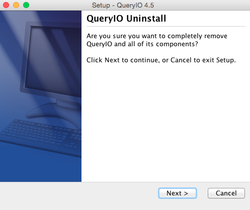

Uninstall QueryIO
In case you want to uninstall QueryIO, use following steps:
Uninstallation process will not remove your database. Thus a new QueryIO cluster can be setup using the same database.
- Clear the QueryIO Cluster: Delete all QueryIO components from the cluster in following order:
- NodeManager
- ResourceMamanager
- DataNode
- NameNode
- Now goto $INSTALL_HOME and run file QueryIO Uninstaller to uninstall QueryIO through UI.
- Click Next to start uninstall process.
- Uninstall process will not delete your database.

- Console based Uninstallation
- For console mode, run uninstall file through terminal located at $INSTALL_HOME
- cd $INSTALL_HOME
-
sh Uninstall
- Press "Enter" or "y" to continue uninstall. Press "n" to cancel uninstallation.
NOTE: Uninstall will not delete your database.
Copyright © 2017 QueryIO Corporation. All Rights Reserved.
QueryIO, "Big Data Intelligence" and the QueryIO Logo are trademarks
of QueryIO Corporation. Apache, Hadoop and HDFS are trademarks of The Apache Software Foundation.